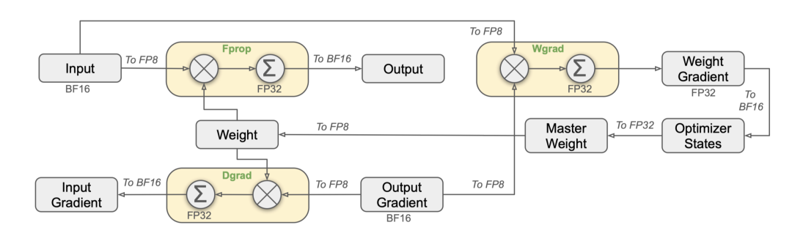

flowchart LR
Inputs["低精度输入 (FP8 / BF16)"] --> MMA["Tensor Core 高速矩阵乘"]
MMA --> Accum["FP32 高精度累加器 (防止下溢与累加误差)"]
Accum --> Epilogue["Epilogue 算子融合 (Bias + ReLU/SiLU + 量化缩放)"]
Epilogue --> Out["写回目标格式到全局显存"]
第 7 课：混合精度、Accumulator 与 Epilogue
参考答案版：包含完整代码实现与问答题深度参考解析。建议先独立完成练习题后再展开核对。
本课目标与完成标准
学完后你应能：区分输入、累加、输出精度，并设计带 alpha/beta/activation 的 epilogue。
通过必须同时满足：
- 独立补齐本课唯一的代码填空题，并通过给定检查；
- 三个问答题均说明因果链，而不是只报术语；
- 能指出至少一个正确性边界和一个性能取舍；
- 总分不低于 8/10，且没有一票否决级概念错误。
前置关系
- 课程前置：CUDA 线程模型、GEMM、C++ 模板基础
- 本课在路线中的作用：CUTLASS 把 mainloop 与 epilogue 分离；常见做法是低精度输入、FP32 accumulator，再在 epilogue 缩放/融合并转换输出。
核心心智模型
核心操作与执行流程图解

图 7-1：DeepSeek-V3 / 现代大模型中的 FP8 精度计算与分块缩放机制
图 7-2：CUTLASS 混合精度累加与 Epilogue 融合输出流水线
1. 它是什么，解决什么问题
混合精度累加与 Epilogue 算子融合（Mixed Precision, Accumulator & Epilogue） 是现代大语言模型（如 DeepSeek-V3、LLaMA-3）兼顾吞吐峰值与数值稳定性的黄金范式。
低精度计算的数值危机与解题架构（结合图 7-1 与图 7-2）： - 混合精度的必然性：大模型训练与推理广泛采用低精度数据类型（如 FP16、BF16，乃至 DeepSeek-V3 采用的 FP8 E4M3/E5M2，图 7-1）。低精度能够将 HBM 显存带宽与片上缓存容量利用率翻倍甚至提升 4 倍，极大释放 Tensor Core 的峰值硬件算力； - 累加器下溢与精度坍塌：在收缩维度 \(K\) 达到数千上万的矩阵乘法中，若在低精度下直接累加（如 FP16 累加），由于尾数位极短（FP16 仅 10 位有效尾数，BF16 仅 7 位），在累加过程中极易出现“大数吃小数”的下溢现象，导致误差呈几何级数累积扩散； - CUTLASS 两段式解耦架构： \[\text{GEMM 架构} = \text{Mainloop (低精度输入 + FP32 高精度累加)} + \text{Epilogue (仿射变换 + 算子融合 + 量化写回)}\] 主循环纯粹负责在 FP32 寄存器中无损吸收所有乘加误差；计算完成后，由独立的 Epilogue 流水线完成偏差添加（Bias）、残差相加（Residual）、非线性激活（SiLU/GELU）与最终的截断量化输出（图 7-2）。
2. 它如何工作（结合图 7-1 与图 7-2）
CUTLASS 的 Epilogue 阶段遵循通用的仿射与非线性变换公式： \[D = \text{Activation}\left(\alpha \cdot \text{Accum} + \beta \cdot C\right)\] 1. 主循环产生高精度累加器（Accumulator）： - 输入张量 \(A, B\) 以低精度（FP16/BF16/FP8）加载并输入 Tensor Core； - Tensor Core 硬件以单精度浮点（FP32）格式执行乘累加，中间结果全程保存在线程专属的 FP32 累加寄存器 Accum 中； 2. Epilogue 片上融合计算： - 线程从全局显存读取标量超参数 \(\alpha\) 与 \(\beta\)； - 分支守卫（\(\beta\) Guard）：若 \(\beta \neq 0\)，线程从全局显存加载累加基底矩阵 \(C\)（如上一层的残差张量）；若 \(\beta = 0\)，绝对不发起对 \(C\) 的任何显存读请求； - 在高精度（FP32）下执行仿射变换 \(\alpha \cdot \text{Accum} + \beta \cdot C\)，并在寄存器中就地计算激活函数（如 SiLU）； 3. 安全截断与格式写回： - 将最终结果安全转换为目标输出格式（如饱和截断为 FP16，或乘以 Scale 因子量化为 FP8）； - 以 128 位合并访存将矩阵 \(D\) 写入目标物理显存。
3. 正确性条件与常见误区
- \(\beta = 0\) 时的无条件读取（空指针段错误与显存带宽浪费）：
- 致命误区：某些初学者为了消除代码分支，直接写成
alpha * acc + beta * c； - 灾难性后果：在许多标准 Linear 算子中，由于不需要累加外来矩阵 \(C\)，调用方往往传入空指针
c = nullptr。无条件读取会导致硬件解引用野指针，直接触发段错误崩溃！即使指针合法，多余读取未初始化的 \(C\) 也会浪费高达数百 GB/s 的宝贵显存读带宽；
- 致命误区：某些初学者为了消除代码分支，直接写成
- 精度下降过早触发（Early Downcast）：
- 若在执行标量乘法 \(\alpha\) 之前就过早将
Accum截断为 FP16，尾数精度丢失后会被放大系数 \(\alpha\) 成倍放大，彻底摧毁数值稳定性。
- 若在执行标量乘法 \(\alpha\) 之前就过早将
4. 性能与工程取舍（Epilogue 访问树 EVT vs. 独立 Kernel）
- Epilogue Visitor Tree (EVT) 的带宽红利：
- CUTLASS 3.x 引入了强大的 EVT（访问者树）机制，允许将复杂的 DAG 计算（如
LayerNorm + Bias + GELU + Quantize）作为编译期子图深度融合在 Epilogue 中； - 彻底省去了数个中间张量对 HBM 的往返读写，减少了 3~5 次独立的 Kernel Launch，端到端延迟降低 40% 以上；
- CUTLASS 3.x 引入了强大的 EVT（访问者树）机制，允许将复杂的 DAG 计算（如
- 何时必须保持独立 Kernel：
- 跨 Block 全局归约算子：若后续算子需要全矩阵全局归约（例如整行的 Softmax 或全张量规约），由于 CTA 之间无法轻易进行低开销全局同步，强行放入 Epilogue 会造成流水线死锁或严重的共享内存争抢；
- 寄存器极限受限场景：若 GEMM 主循环已经用满了 200+ 寄存器，放入复杂的包含大量三角函数、指数函数的 Epilogue 会直接触发本地显存溢出（Local Memory Spill），此时拆分为独立 Kernel 反而能维持更高的 SM Occupancy。
具体演示：混合精度下截断时机对误差的放大实证
考虑标量测试用例：缩放系数 \(\alpha = 2.0\)，累加器结果 \(\text{Accum} = 3.0009765625\)（包含微小尾数），\(\beta = 0.5\)，底数 \(C = 4.0\)： - 正确的高精度保持流（Late Downcast）： - 在 FP32 下执行仿射计算： \[\text{Result}_{\text{FP32}} = 2.0 \times 3.0009765625 + 0.5 \times 4.0 = 6.001953125 + 2.0 = 8.001953125\] - 最后写回时截断为 FP16，完整保留了最高有效精度。 - 错误的提前截断流（Early Downcast）： - 若在进入 Epilogue 时先把 \(\text{Accum}\) 强行按 FP16 截断为 \(3.0\)（丢失了 \(0.0009765625\)）； - 随后计算：\(2.0 \times 3.0 + 0.5 \times 4.0 = 8.0\)； - 截断误差直接被系数 \(\alpha = 2.0\) 放大了一倍！在大模型数万层的迭代中，这种累积截断误差会像滚雪球一样直接导致模型发散。因此转换前必须在足够的高精度空间内完成全部线性运算。
实践任务：唯一代码填空题
补齐线性 epilogue，beta 为 0 时不得读取 c。
规则：只能修改 TODO/______ 所在位置；不要删除断言或放宽误差。代码注释说明了每个边界条件。
Code
def linear_epilogue(acc, alpha, beta, c=None):
"""返回 alpha*acc + beta*c。"""
# TODO：只补齐下面这个表达式。
return ______
assert linear_epilogue(3.,2.,0.,None) == 6.
assert linear_epilogue(3.,2.,.5,4.) == 8.检查方法
运行本单元格；所有 assert 必须通过。另手工构造一个边界输入，解释预期结果。
提交时请给出：补齐后的代码、实际运行输出（环境不可用时注明“仅静态审查”）以及对失败用例的解释。
Q1
不要背定义：请从输入、状态变化和输出三个阶段解释“混合精度、Accumulator 与 Epilogue”的工作机制。
你的答案：
Q2
beta=0 仍无条件 load C 会造成什么正确性与性能问题？
你的答案：
Q3
何时把 activation 放进 epilogue，何时保持独立 kernel？
你的答案：
评分与通过规则
- 代码 4 分：正常输入 2 分，边界输入 1 分，解释实现 1 分；
- Q1～Q3 各 2 分；
- 一票否决：结果碰巧正确但核心因果链错误、删除边界检查、把未运行结果说成实测。
需要提示时按四级机制请求：概念区域 → 具体方向 → 关键局部 → 完整答案。